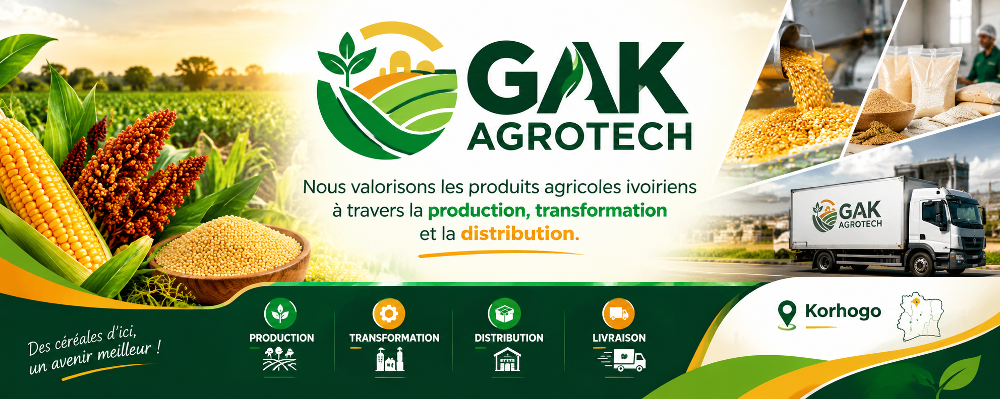
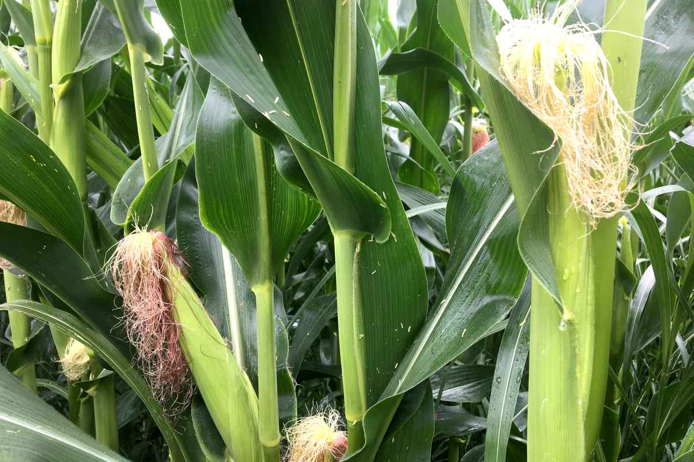
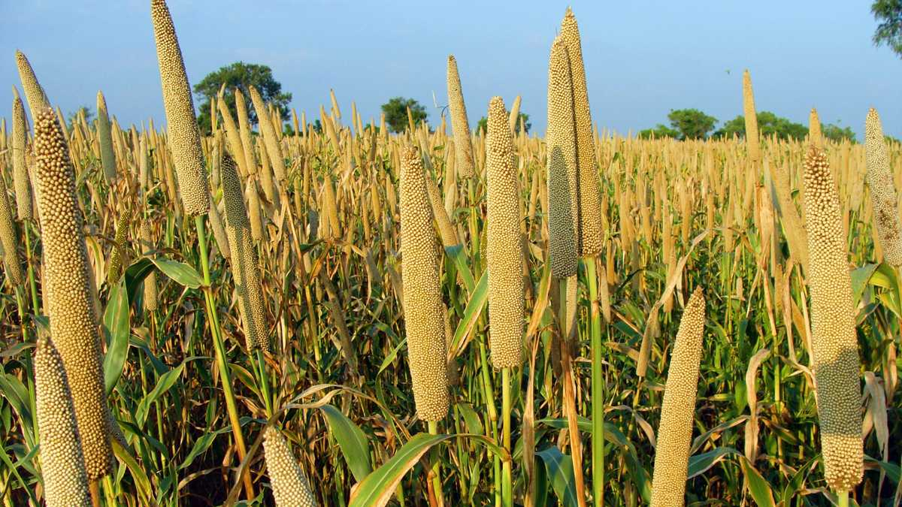
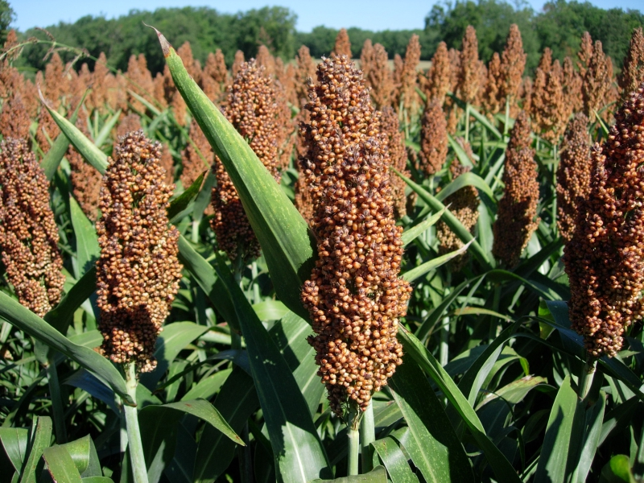
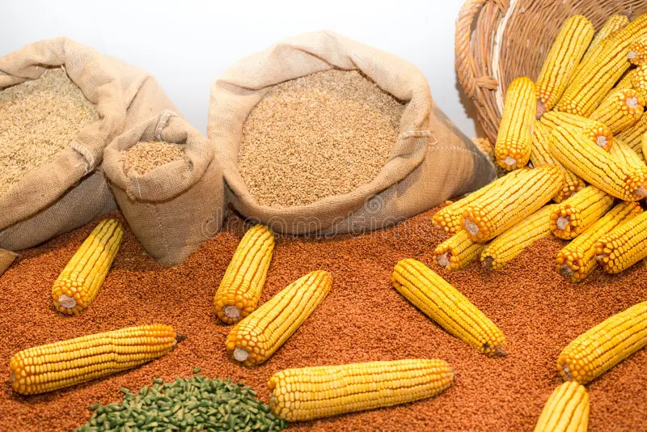
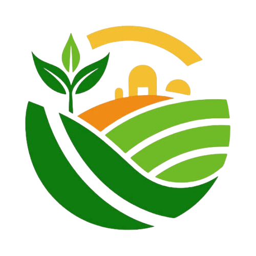

BIENVENUE SUR GAK-AGROTECH
Nous valorisons les produits agricoles ivoiriens à travers la production, la transformation et la distribution.






GAK-AGROTECH
Nous valorisons les produits agricoles ivoiriens à travers la production, la transformation et la distribution.




